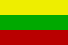

|
Länderinformationen Litauen
1. Das Wichtigste auf einen Blick2. Sehens- und Hörenswertes
3. Politik & Gesellschaft
4. Schmeckenswertes
5. Medien
6. Reisetipps
1. Wissenswertes
|  | Hier
haben wir die wichtigsten Zahlen und Fakten zu Litauen (Lietuva)
und der litauischen Sprache (lietuvių kalba)
zusammengetragen. |
 Die litauische Sprache
Die litauische Sprache
Das Litauische gehört zu den ostbaltischen Sprachen, deren Wurzel über die baltischen Sprachen wiederum zu den indoeuropäischen Sprachen gezählt werden kann. Andere indoeuropäische Sprachzweige sind unter anderem der germanische (zum Beispiel Deutsch und Englisch), der slawische (zum Beispiel Russisch und Polnisch) und der nordische (zum Beispiel Dänisch und Schwedisch) Sprachzweig.
Die litauische Sprache hat noch sehr viele erhaltene uralte Formen und gilt deshalb als eher altertümlich. Das Litauische ist die dem Sanskrit am nächsten liegende lebende Sprache innerhalb der Gruppe der indoeuropäischen Sprachen. Eine weitere noch lebendige baltische Sprache neben dem Litauischen ist das Lettische.
Im Litauischen wird das lateinische Alphabet verwendet – somit werden Sie beim Erlernen der litauischen Sprache etwas entlastet. Allerdings gibt es ein paar Sonderzeichen, die in dem Grammatikteil unseres Litauisch-Basiskurses erläutert werden.
Auf die Frage "Ar kalbate lietuviškai? – Sprechen Sie Litauisch?" werden Ihnen etwa 4 Millionen Menschen mit "Taip. – Ja." antworten.
Litauen hat rund 3,4 Millionen Einwohner, aber nur etwa 2,7 Millionen sprechen Litauisch als Muttersprache. Circa 300.000 Einwohner sprechen Russisch. Dies rührt daher, dass Litauen bis 1991 ein Teil der Sowjetunion war. Circa 200.000 Menschen in Litauen sprechen Polnisch. Andere in Litauen gesprochene, jedoch weniger verbreitete Sprachen sind das Weißrussische, Ukrainische, Tatarische, Karaimische und Lettische. Einige von diesen Sprachen können Sie sich auch in unserem Sortiment von Sprachkursen unter www.sprachenlernen24.de erwerben. Infolge politischer Entwicklungen nach 1990 emigrierten viele Litauer ins Ausland, der Großteil von ihnen nach Irland.
Seit der litauischen Mitgliedschaft in der Europäischen Union fielen zahlreiche Reisebeschränkungen und viele Litauer verließen erneut das Land, um im Ausland zu leben, zu arbeiten oder zu studieren.
Seit dem 1. Mai 2004 (Beginn der litauischen EU-Mitgliedschaft) ist Litauisch eine der offiziellen Amtssprachen der Europäischen Union.
 Hoch-
und Umgangssprache
Hoch-
und Umgangssprache
Im Litauischen, wie in den meisten Sprachen, gibt es Dialekte. Sie weichen von der Standardsprache mehr oder weniger stark ab. Als litauische Hochsprache gilt die Variante des Südoberlitauischen in der Region Suvalkija. Diese Region liegt im Südwesten von Litauen, sie grenzt an Polen und Kaliningrad. Der Name kommt vermutlich daher, dass in Polen, unweit der Grenze, eine Ortschaft namens Suwałki liegt.
Da manche Dialekte nicht von vielen Sprechern gesprochen werden bzw. die Sprecher schon alt sind, sind diese Dialekte allmählich vom Aussterben bedroht.
Nun aber zu Litauen. Im folgenden Abschnitt finden Sie interessante Fakten zu Litauen sowie Informationen zu landestypischen Begebenheiten.
 Einwohner
Einwohner
In Litauen leben rund 3,4 Millionen Einwohner und es ist damit in etwa so bevölkerungsreich wie die Stadt Berlin. An Minderheiten lassen sich in Litauen vor allem Russen finden. Auch gibt es Polen und Weißrussen, aber ihre Anzahl ist nicht besonders groß. Die meisten Litauer sprechen neben Litauisch noch Russisch oder oft auch Deutsch.
Das Durchschnittsalter der litauischen Bevölkerung liegt bei rund 38 Jahren und ist damit um einige Jahre geringer als in Österreich oder Deutschland.
Die durchschnittliche Lebenserwartung liegt bei rund 68 Jahren (Männer) und 79 Jahren (Frauen).
 Fläche
Fläche
Das litauische Staatsgebiet umfasst eine Gesamtfläche von etwa 65.000 km². Davon beträgt die Landfläche 64.000 km² und die Wasserfläche knapp 900 km². Somit ist Litauen etwa eineinhalbmal so groß wie die Schweiz.
Die Grenznachbarn von Litauen sind im Norden Lettland, im Osten und Südosten Weißrussland, im Süden Polen und im Südwesten Kaliningrad, das zu Russland gehört. Die Landgrenze in Litauen beträgt etwa 1200 Kilometer. Im Westen bildet die Ostsee die knapp 100 Kilometer lange Meeresgrenze.
Interessant finden Sie vielleicht, dass die Bevölkerungsdichte in Litauen etwa bei 55 Einwohnern pro km² liegt, was eine deutlich dünnere Besiedlung bedeutet als in Deutschland.
 Währung
Währung
In Litauen wird mit dem Litas (litas, Abk.: LTL) gezahlt. Diese ist wiederum unterteilt in 100 Centas (centų).
Einen aktuellen Wechselkurs von Litas zu Euro können wir Ihnen an dieser Stelle freilich nicht bieten, dieser lässt sich jedoch im Internet mit wenig Aufwand bequem finden (geben Sie einfach bei einer Suchmaschine den Begriff "Währungsrechner" ein). Oder Sie fragen bei Ihrer Bank danach.
 Ökonomische Situation
Ökonomische Situation
Im direkten Vergleich zu Deutschland, Österreich oder der Schweiz verfügt Litauen über einen deutlich geringeren Lebensstandard, wenngleich die litauische Wirtschaft neuerdings sehr hohe Wachstumsraten erlebt. Von einem armen Land kann jedoch nicht gesprochen werden, vor allem die Region in und um Wilna ist im Vergleich zu den ländlichen Gebieten in Litauen relativ wohlhabend.
Hauptexportgüter des Landes sind moderne Industrieprodukte (vor allem Kraftfahrzeuge, Maschinen und Metallprodukte), Holzprodukte (Holz und Möbel) und Lebensmittel.
Den größten Anteil der Beschäftigung nehmen in Litauen der Dienstleistungssektor sowie die leichte Industrie ein. Nur etwa 15 Prozent der Bevölkerung lebt von Landwirtschaft, was allerdings deutlich mehr als in Deutschland ist.
 Zeitzone
Zeitzone
Litauen liegt nicht in der selben Zeitzone wie Österreich, Deutschland und die Schweiz. Die Zeitverschiebung beträgt eine Stunde: wenn Sie mittags um 12 Uhr mittagessen gehen, haben die Menschen in Litauen eventuell bereits gegessen, dort ist es schon 13 Uhr.
In Litauen wird übrigens zur Sommerzeit die Uhr ebenfalls um eine Stunde vorgestellt.
Im nächsten Kapitel haben wir einige ausgesuchte Reiseempfehlungen zusammen gestellt.